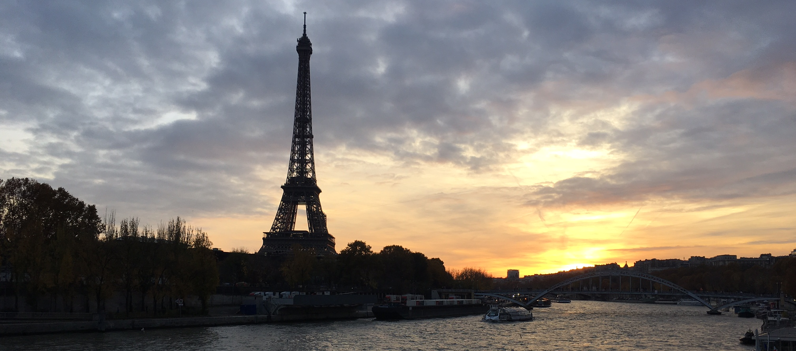

Paris
Paris, France - November 22, 2017
From Friday to Sunday, I explored Paris. My flight got into Orly around 6pm on Friday and then I got to my hostel via a bus that goes from the airport to Denfert-Rochereau, a metro station only a 10 minute walk from the hostel. It was a pretty relaxed evening, the other two people I was traveling with agreed to get Italian food from a nearby restaurant for dinner. We went to bed decently early because Saturday morning was going to be an early one.
I got us up by 6:30am on Saturday to get ready and grab breakfast (croissants & a cappuccino) before walking about 20 minutes to a train station that had a train going to Versailles. It was about a 30 minute train ride from Gare Montparnasse station to Versailles, and then another 15 minute walk from the station to the palace. I had no idea what to expect when I saw it (I honestly thought there would be nothing nearby because I had only seen drawings from the 1700s...). It was massive and gorgeous, despite the weather being very misty and chilly. I ended up getting into Versailles for free because I brought my student visa, which proved I lived in the EU. Other than the fact that there were a lot of people also visiting Versailles, I thoroughly enjoyed and was awe-struck by how gorgeous Louis XIV's rooms were. Every consecutive room we entered was more grand than the last, and no photos would do any of those rooms justice. Louis XIV is a particular favorite of mine; he was known as the "Sun King", built Versailles as a way to act as a divine, absolute monarch, and my AP Euro teacher in high school commented on how toned his "dancing legs" were in every painting of him (men in the 1600s wanted to show off their muscular legs, apparently). Another famous French king that was consistently mentioned along with Louis XIV was Louis XVI, or the king that was executed during the French Revolution. Sadly, Marie Antoinette's chateau was closed for the season, but there were many busts and paintings of Louis XVI in the king's rooms.
After an enjoyable morning at Versailles (where I was basically nerding out the entire time - I love French history!), we had lunch at a nearby cafe before heading back into Paris. Our next stop was the Eiffel Tower, where I was able to take the elevator up to the 2nd floor. It was a beautiful view and I am always impressed by how the tower was constructed and designed to last so long. Once we got back to solid ground, we took a nice stroll towards Champs-Élysées and the Arc de Triomphe. On the way, the sun was setting, so I was able to get some gorgeous photos of the Eiffel Tower and the River Seine. Champs-Élysées is the high-end shopping street in Paris, and we had fun poking our heads into a few of the stores to see how they looked. For dinner, we found a restaurant on a nearby street and the sandwich that I got came with a plate covered in French fries. Like, more than half of the plate was fries. Pretty funny, but still quite delicious.
Around 8:30pm we headed back toward the Eiffel Tower (one of the girls I was traveling with originally wasn't allowed to go up the Tower because she had glass bottles in her purse from Versailles). We arrived at 9pm when the sparkling lights turned on. They last for about 5 minutes and we had a great spot at the bridge to take photos and videos. The lights go off every hour, on the hour, throughout the evening. I ended up seeing the lights a total of 3 times while waiting outside the Eiffel Tower. We did get slightly harassed by some vendors trying to sell us bottles of champagne, light up Eiffel Tower figurines, and roses. There was a funny moment where two guys selling roses came up to us and, in broken English, tried to compliment me into buying a rose. The first thing he said was "you have a beautiful nose," before rambling on about my eyes and other facial features. I got a good chuckle from that - like, the first thing you thought to compliment was my nose? Not the most romantic thing to choose...
Sunday was a busy and slightly stressful day, but ended up being successful. We went to the Catacombs 25 minutes before they opened but we ended up having to wait in line an extra 45 minutes after the Catacombs opened before getting in. Because I was taking an archaeology course, it was fascinating to read about how the bodies ended up there in the first place. Many of them were victims of the Black Death in 1348 and were moved in the late 1700s/early 1800s from a mass grave in a cemetery that had become full. There were so many bones (many skulls and leg bones) that it was pretty overwhelming to walk through.
We took the metro to the Notre Dame and did a quick tour through the inside during a mass, which was interesting to watch because I haven't seen a Catholic mass in years. After the Notre Dame, we got crepes in a nearby cafe. I had a strawberry and Nutella crepe for lunch, which was delicious. We then walked to the Louvre, but stopped at Pont Neuf (not actually a very interesting place, but I got excited because it was featured in a Nancy Drew Her Interactive PC game) and the Lovelock bridge.
The Louvre was also free for me, which was great. It meant that we could visit for a short time and not feel bad for having to leave soon. We, of course, went to see the Mona Lisa first then the Venus de Milo. On the way, I saw a few paintings that I've seen before in history class and of course had to take a photo of (mostly the paintings about Napoleon). It's always super cool to see art in real life that you've seen before in a book or on the computer. I definitely got excited to see Delacroix's Liberty Leading the People, which is depicting the Revolution in 1830 that is also the basis for Les Misérables.
I was decently stressed about getting to the airport with enough time because we left the Louvre a little later than I expected and then the bus to the airport got stuck in some traffic at the airport. Thankfully, there was almost no line for security and we got to the gate with enough time for me to get a sandwich for dinner and fill up my water bottle. On the plane back, I was actually able to see the Eiffel Tower in the distance.
Cheers!
- Caileigh Marshall